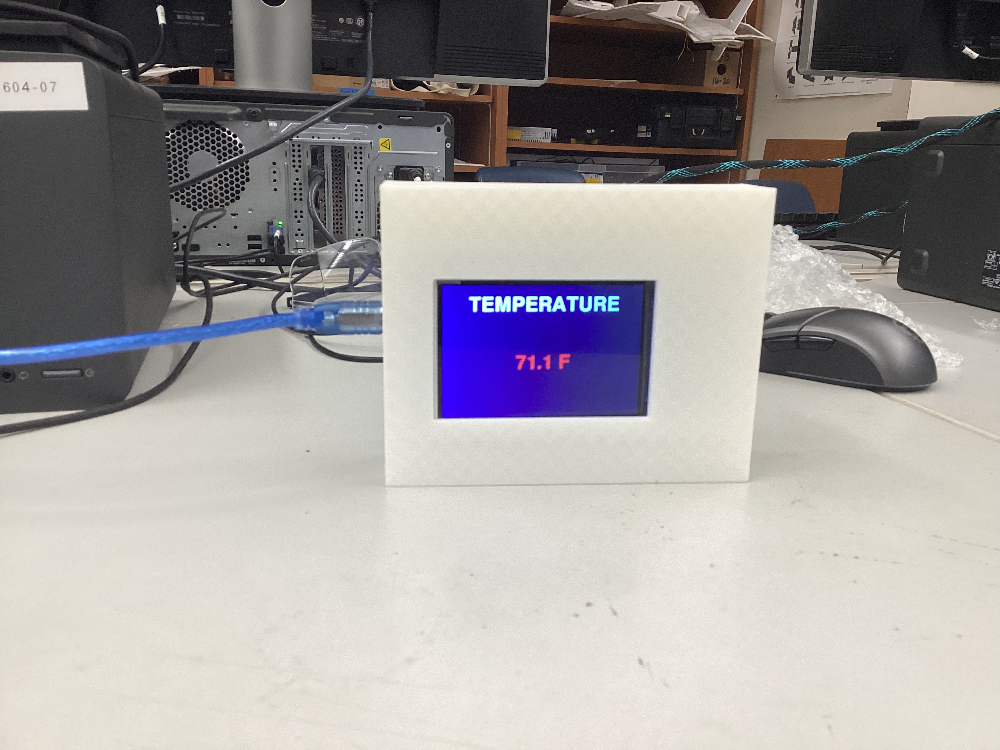
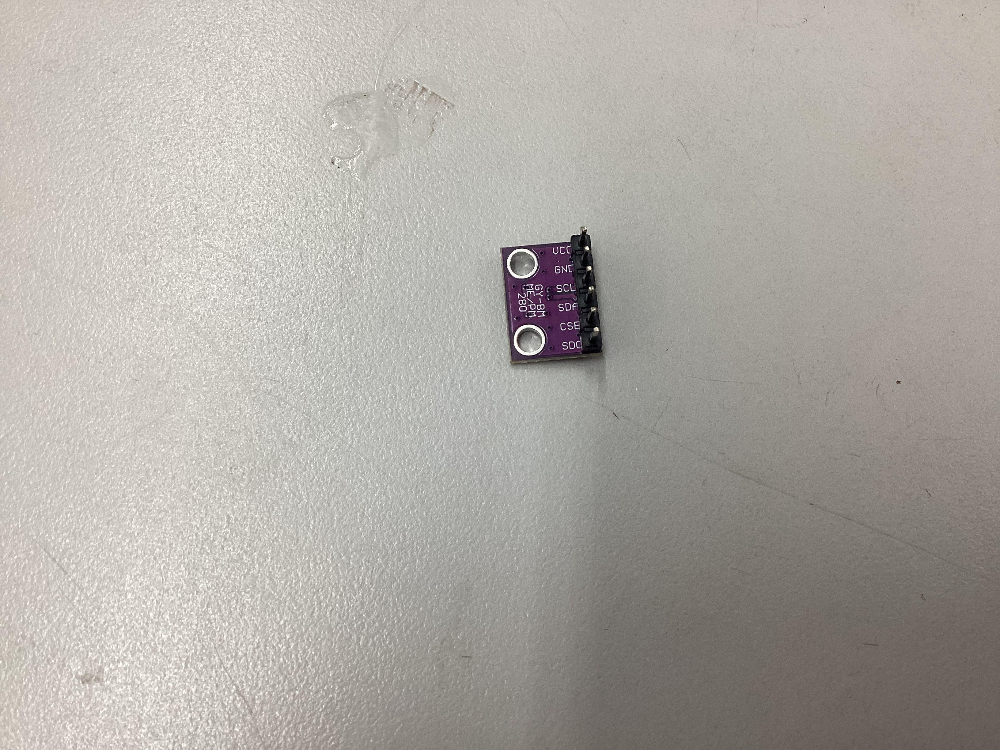
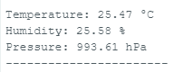
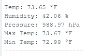
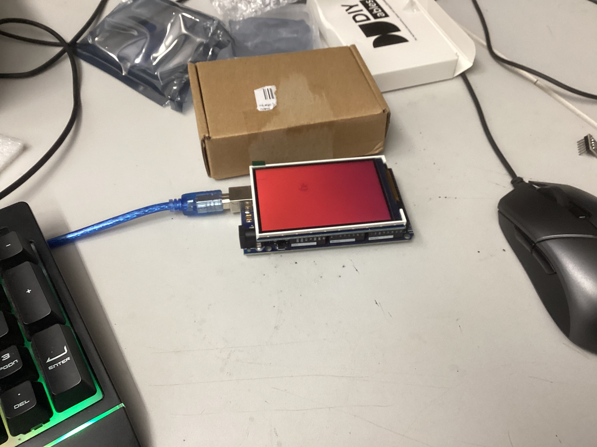
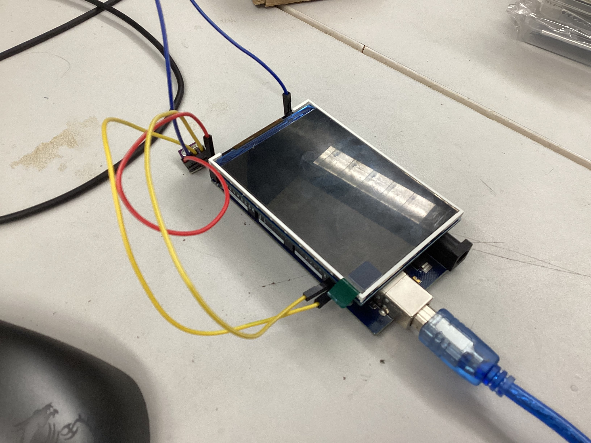
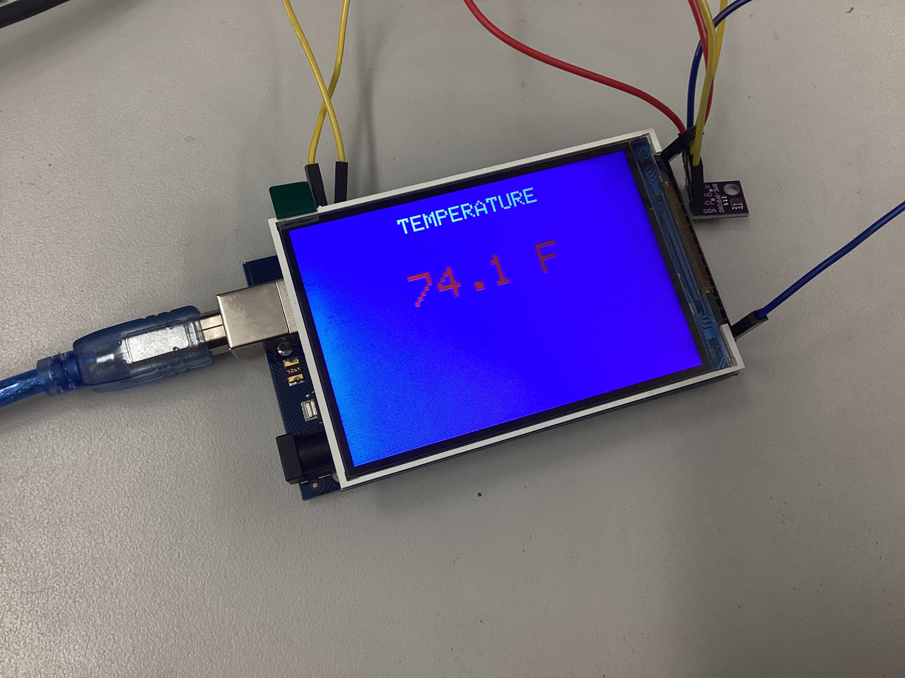
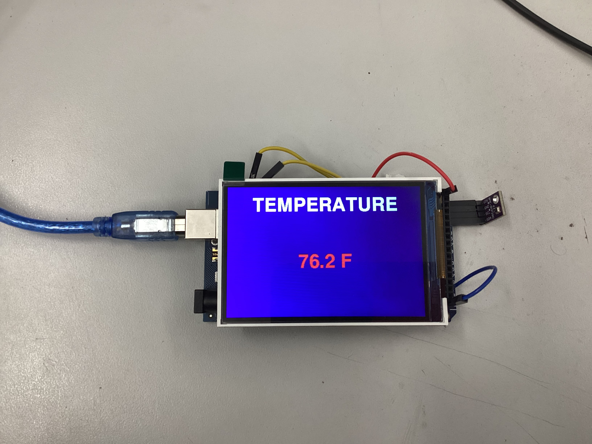

This project is an Arduino-based weather station that measures and displays temperature, humidity, barometric pressure, and the maximum and minimum temperature in real time. The device uses a BME280 sensor to collect data and outputs readings to a TFT display shield mounted on an Arduino Mega. All components are in a custom-designed, 3D-printed enclosure created using Fusion 360 and printed on a Bambu printer. A successful project displays accurate, live environmental data in a clear, readable format within a clean, fully enclosed case.
The original tutorial uses an Arduino Mega paired with a basic 16x2 LCD shield that displays temperature, humidity, and pressure with minimal visual customization. This project upgraded to a 3.5" TFT color display, roughly double the screen area, which enabled significantly greater control over text size, layout, and color. Because the display hardware differed from the source, the display code was altered. Additional functionality was also added beyond the original, the station tracks and displays daily maximum and minimum temperatures, resetting automatically every 24 hours. The display also shows one reading at a time for three seconds before switching, rather than showing all data at once. The temperature was converted from Celsius to Fahrenheit. Finally, the entire electronics assembly was enclosed in a custom case designed from scratch in Fusion 360 and 3D printed which was not in the inspiration at all.
Design Considerations
This project is a personal indoor weather station designed to measure and display real-time temperature, humidity, and barometric pressure. It is built for personal use and was completed as an individual project. The device is intended for indoor use and is portable, as it only requires a USB power source. It does not connect to the Internet or use Bluetooth. The enclosure was fabricated using a 3D printer. The project is powered by an Arduino Mega. Inputs come from a BME280 environmental sensor, outputs are displayed on a 3.5" TFT color display. The project differs from its inspiration by using a larger color display, custom enclosure, cycling data interface, max/min temperature tracking, and Fahrenheit output. The inspirational tutorial was published in 2017 on Instructables and remains available with current, accessible parts. Total spending came to approximately $55–60, within the $75 maximum. The enclosure measures approximately 5" long, 4" high, and 2" wide. Materials used include an Arduino Mega, BME280 sensor, TFT display shield, jumper wires, solder, and PLA filament. The BOM spreadsheet has been completed and linked below. All tools required, soldering iron, calipers, and 3D printer are found in the Fab Lab. Electronics are concealed within the custom 3D-printed enclosure, with only the display visible through the front opening.
Arduino IDE was used to write, test, and upload all code to the Arduino Mega. Fusion 360 was used to design the custom 3D-printed enclosure, with calipers used to take precise measurements of the electronics before modeling. Bambu slicer software was used to prepare and send print files to the Bambu 3D printer. GitHub was used for version control and to store all project files, including code, design files, photos, and videos. Flint ai was used during the research phase to verify that selected parts matched the project requirements. ChatGPT was used throughout the project to assist with troubleshooting code and display issues.
Hand Tools & Fab Lab Equipment
A soldering iron was used to solder header pins onto the BME280 sensor. Calipers were used to measure component dimensions for accurate enclosure design. A Bambu 3D printer was used to fabricate all enclosure parts. A laptop was used for all software work, coding, and file management. A breadboard was used during early testing phases to verify individual components before final assembly.
Original Plan
The project was organized into different parts. It began with planning, selecting the project, completing a task analysis, building a Gantt Chart, researching parts, and finalizing the BOM. From there, the focus shifted to hardware, wiring the components, writing test code to verify everything functioned correctly, and resolving any sensor or display issues that emerged. Once the hardware was confirmed working, the next steps were soldering the connections and developing the full code, covering temperature, humidity, air pressure, and max/min tracking. The final phases covered the enclosure, researching and brainstorming design options, modeling and 3D printing the case in Fusion 360. The last part of the plan was a round of error fixes and the creation of a final presentation.
Changes from Plan
The project followed the overall structure of the plan but changed in a few areas. The testing of the hardware components was a little later because their parts took a while to arrive. The display happened when the original TFT display failed to work with the Arduino Mega. This was not planned for and required ordering a replacement and adding unplanned troubleshooting time. Similarly, the 3D printing phase extended beyond the planned window, requiring six printed iterations through early March rather than concluding by February 23. The error fixing phase merged with the printing phase because enclosure issues were resolved together. Despite these delays, the presentation and final documentation were completed on time by March 4.
Joined the classroom and researched possible project options. Top candidates included a phantom chessboard, home automation intruder alarm, online security camera, GPS/SMS call box, and a weather station display.
January 7
Selected the weather station as the final project and began the task analysis.
January 8
Completed the task analysis and started building the Gantt Chart.
January 9
Finished the Gantt Chart.
January 12
Began researching required parts and started drafting the Bill of Materials.
January 14
Completed the BOM. Used Flint, an AI tool, to verify that selected parts matched the tutorial requirements — this process identified a better sensor option than originally listed.
January 15
Began writing test code for the breadboard setup. Installed the Adafruit BME280 and LiquidCrystal libraries, and configured a GitHub repository on both school and home computers.
January 20
Finished the template testing code and began customizing it for the new display.
January 21
Revised the code to add max/min temperature tracking and redesigned the display to cycle through one measurement at a time, switching every three seconds. The max/min resets automatically every 24 hours. Also created separate test files for the display and sensor, then combined them into a single unified test.
January 22
Ordered parts. Switched from the Arduino Mega to an Arduino Uno since only a few ports were needed, and wrote new test code for it.
January 23
Converted all code from the Arduino Mega to the Arduino Uno and found inspiration for the enclosure design online.
January 28
Parts arrived. Tested the Arduino Uno and ran the sensor code, but encountered an error where the sensor was not detected. Determined that the header pins needed to be soldered before testing could proceed.
February 4
Soldered header pins onto the BME280 sensor and wired it to the breadboard. GND to ground, VCC to power, SDA to A4, and SCL to A5. Switched back to the Arduino Mega and moved SDA and SCL to their dedicated pins; the code continued to work. Connected the display shield and powered it on successfully.
February 5
Ran test code for the display. The screen powered on but did not respond to any commands.
February 6
Continued troubleshooting the display without success. Researched the issue on Arduino forums and used ChatGPT for additional help, ultimately concluding that the display was incompatible with the Arduino Mega. Decided to order a replacement. In the meantime, updated the code to output Fahrenheit instead of Celsius and refined the max/min reset logic.
February 10
Ordered a replacement display shield and continued troubleshooting the original without resolution. Researched potential enclosure designs.
February 11
The new display arrived, powered on, and ran code successfully, however, its pin layout blocked the ports needed for the sensor.
February 18
A new 5V sensor arrived, but the pin conflict with the display shield persisted. Used AI assistance to rewrite the code and work around the issue.
February 19
Successfully got the sensor and display working together. Refined text size and color settings with AI assistance, as the initial output was small and difficult to read. Began taking measurements for the enclosure.
February 23
Completed all enclosure measurements using calipers, began designing the case in Fusion 360, and sent the first print to the Bambu printer.
February 24
Received the first print. It had been printed on the wrong side, requiring supports that damaged the surface, and the walls were too thin. The cable hole and overall fit were functional. Next steps, increase wall thickness, improve the display opening, and reorient the print to eliminate the need for supports.
February 25
Updated the design with thicker walls, better electronics coverage, and correct print orientation. The display fit improved but electronics were still partially exposed. Added a sliding rail mechanism to allow a back panel to close the case and started the next print.
February 26
Designed the top sliding piece using measurements copied from the bottom piece. The first attempt was slightly too large, so measurements were adjusted and both pieces were reprinted together.
February 27
The sliding mechanism worked well, but the bottom piece was still slightly oversized, allowing the display to shift. Corrected the cable hole position, reduced the bottom piece by 0.3 inches, and started a new print.
March 2
Received the updated print. The cable hole was slightly off, so it was lowered by approximately 0.1 inches and another print was started.
March 3
Received the final print. The cable fit well and the display sat noticeably flatter, though some minor movement remains, a future improvement would be to tighten tolerances further. Also noted that after running for 30 minutes, the temperature reading rose by 7 degrees, likely due to heat from the enclosed electronics. Future iterations should include ventilation holes near the sensor. Uploaded 80 files to GitHub, converting all photos from HEIC to JPEG and videos from MOV to MP4.
March 4
Completed final documentation photos, created a presentation slideshow, and built a GitHub website to host all project files and documentation.
Important Decisions
At the start of the Arduino Mega was swapped out for an Arduino Uno since the project required only a few ports, making the Uno a more practical choice. The display was upgraded from a basic LCD to a 3.5" TFT color screen because it offered better readability and visual quality. Later in the project when the original TFT display proved incompatible with the Arduino Mega, the decision was made to order a replacement rather than continue troubleshooting an unsolvable hardware conflict. This delayed the project a few days by waiting for the new display but kept the project moving forward. Then the new display blocked the original sensor's 3v pin but left a 5v pin open. A second replacement sensor was ordered, this time a 5V version because it was compatible with the ports still open. The interface was redesigned to cycle through one measurement at a time every three seconds, rather than displaying all data simultaneously, to keep the screen clean and easy to read at a glance. Max/min temperature tracking with a 24-hour reset was added to increase the practical usefulness of the device beyond what the original tutorial offered. The decision to design a custom enclosure from scratch in Fusion 360, rather than leaving the electronics exposed, was made to create a finished, professional looking product.
Finished Project

Finished ProjectFinished project
Sensor Testing

SensorSensor Test
Temperature Conversion

Celsius Output

Fahrenheit Output
Display Test

Display changing colorsDisplay powering on
Sensor + Display Integration

Sensor Display TestSensor Display Test 2

Sensor Display SuccessSensor Display Success 2

Sensor Display OrientationDisplay showing sensor dataDisplay working inside case
There were many mistakes throughout the project that required correction. The first major error was ordering the wrong Arduino board, the Mega was initially selected but later replaced with the Uno when it became clear fewer ports were needed, resulting in wasted time rewriting code for the new board. When the original TFT display arrived and failed to work with the Mega after several days of troubleshooting, it became clear the two were simply incompatible. The replacement display arrived and its pins blocked the sensor connections which prevented the sensor from working. On the hardware side, the sensor headers were not soldered before initial testing, causing a delay because the sensor could not be tested. In regards to the enclosure, many revisions were made to correct the dimensions, sliding mechanism, and functionality of the case.
Solutions
The Arduino board mismatch was corrected by switching to the Uno and rewriting the code to match its pin configuration. When the original display proved incompatible with the Mega, a replacement display shield was ordered after using ChatGPT to confirm the root cause of the issue. The pin conflict between the new display and the sensor was resolved by ordering a 5V version of the BME280 to allow the sensor to plug into the mega. Soldering the header pins onto the sensor resolved the issue of not being able to run code to the sensor. Enclosure problems were solved through multiple revisions. Each print was examined, specific measurements were corrected in Fusion 360, and a new version was printed until the prototype was corrected.
Reflection
This project made clear that building a functional hardware device requires far more than following a tutorial. The technical skills developed throughout including writing and troubleshooting Arduino code, soldering, CAD modeling in Fusion 360, and 3D printing. More than any individual skill, the project demonstrated how much of engineering involves responding to unexpected problems. The display incompatibility, pin conflicts, and enclosure iterations were not part of the original plan, but working through each one produced the most important learning of the entire project.
Managing a project of this scale required consistent organization and planning. Maintaining a Gantt Chart and breaking the work into smaller phases was essential to staying on track. By dividing the project into manageable pieces, it became easier to identify where problems were occurring and what was working. When problems happened, having a record of decisions made and steps already attempted made it significantly easier to determine the right path forward.
On a personal level, this project built confidence in the ability to work through difficult problems independently. There were multiple points where issues arose unexpectedly, particularly during the display troubleshooting phase. A key takeaway was that there are many resources available when problems occur, AI tools, online forums, and other peoples work in the maker community all played an important role in finding solutions. I am proud of the finished project because it looks professional, functions as intended, and turned out better than what I originally envisioned.
Looking ahead, several improvements would strengthen the project further. Adding ventilation holes around the BME280 sensor would allow better airflow and improve measurement accuracy, as heat from the enclosed electronics was observed to raise the temperature reading noticeably after extended use. Tighter enclosure dimensions would reduce movement of the display. The display could also be improved by making it more visually appealing. There is unused space on the screen that could be filled with larger text and more visually refined colors. Additionally if this project wanted to be mass produced 3d printing settings could be improved to improve the cost and time efficiency.